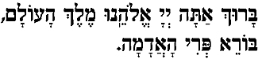

MyJewishLearning.com
| Bread | Wine & Grape Juice | Fruit | Vegetables | Miscellaneous Foods |
|---|---|---|---|---|
|  | ||||
| Barukh ata Adonai Eloheinu melekh ha'olam hamotzi lehem min ha'aretz. | Barukh ata Adonai Eloheinu melekh ha'olam borei p'ri hagafen | Barukh ata Adonai Eloheinu melekh ha'olam borei p'ri ha'eitz. | Barukh ata Adonai Eloheinu melekh ha'olam borei p'ri ha'adamah. | Barukh ata Adonai Eloheinu melekh ha'olam borei minei mezonot. |
| Blessed are You, Lord our God, Ruler of the universe, who brings forth bread from the earth. | Blessed are You, Lord our God, Ruler of the universe, who creates the fruit of the tree. | Blessed are You, Lord our God, Ruler of the universe, who creates the fruit of the ground. | Blessed are You, Lord our God, Ruler of the universe, who creates varieties of nourishment. | Blessed are You, Lord our God, Ruler of the universe, at whose word all came to be. |
| אב | Av | 5 | 30 days | July-August |
| אלול | Elul | 6 | 29 days | August-September |
| תשרי | Tishri | 7 | 30 days | September-October |
| חשון | Cheshvan | 8 | 29 or 30 days | October-November |
| כסלו | Kislev | 9 | 30 or 29 days | November-December |
| טבת | Tevet | 10 | 29 days | December-January |
| שבת | Shevat | 11 | 30 days | January-February |
| אדר א | Adat I (In leap years only) | 12 | 30 days | February-March |
| אדר ב | Adar (called Adar Beit in leap years) | 12 (13 in leap years) | 29 days | February-March |